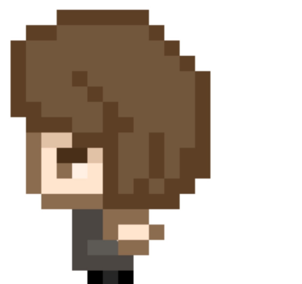

The player character: also unnamed, It's the character you play as.
The story of the game is that this player character has a terrible
Gashapon addiction and has to collect all of them. So they search,
and come across this town. This town has a gashapon shop, so they
collect coins around town to use to collect little keychains.

In-game Screenshots: I wanted my game to give off a "retro Pokémon"
type feel, something that would be made in RPG maker (a game making software).
Unfortunately I haven't been able to capture the atmosphere I wanted.
NPCs: The planned NPCs for the video game. Unfortunately due to time
constraints they were never added. These NPCs would be interactable with
their own dialogue and purpose. They don't actually have names, they are
referred to as their occupation.